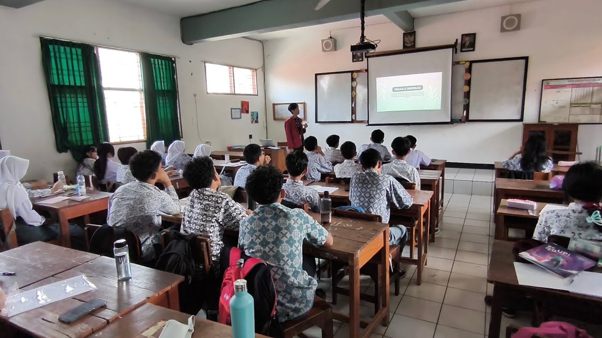

Refleksi Produk & Penilaian Guru Pamong (Siklus 1)
Dokumentasi utuh pelaksanaan PPL Siklus 1 yang mencakup modul ajar, media pembelajaran, penilaian resmi guru pamong, serta rekaman video dokumentasi praktik pembelajaran.
Refleksi Produk Pembelajaran Siklus 1
Arsip perangkat modul ajar, media interaktif, video mengajar, dan analisis reflektif
Modul Ajar Informatika - Berpikir Komputasional
Modul ajar ini dirancang untuk memfasilitasi pembelajaran Informatika pada materi Konsep Berpikir Komputasional melalui pendekatan yang kontekstual, kolaboratif, dan berpusat pada peserta didik. Pembelajaran menggunakan model Inquiry Based Learning dengan pendekatan Pembelajaran Mendalam (Mindful, Meaningful, dan Joyful) serta strategi Pembelajaran Berdiferensiasi. Peserta didik diarahkan untuk memahami konsep dekomposisi, pengenalan pola, abstraksi, dan berpikir algoritma melalui studi kasus yang dekat dengan kehidupan sehari-hari, diskusi kelompok, penyusunan hipotesis, pengumpulan informasi, presentasi, dan refleksi. Modul juga dilengkapi dengan asesmen diagnostik, formatif, reflektif, dan sumatif untuk memperoleh gambaran perkembangan pemahaman peserta didik selama proses pembelajaran.
Slide Presentasi
Media presentasi pembelajaran Informatika yang digunakan untuk membantu peserta didik memahami konsep Berpikir Komputasional secara sistematis dan kontekstual. Materi mencakup pengertian, dekomposisi, pengenalan pola, abstraksi, algoritma, manfaat, penerapan dalam kehidupan sehari-hari, serta hubungan dengan teknologi. Media juga dilengkapi pretest dan posttest sebagai bagian dari asesmen pembelajaran.
LKPD (Lembar Kerja Peserta Didik)
Lembar kerja kelompok pembelajaran Informatika yang dirancang untuk membantu peserta didik memahami konsep Berpikir Komputasional melalui aktivitas dekomposisi, pengenalan pola, abstraksi, dan berpikir algoritma. LKPD dilengkapi kegiatan pengamatan, diskusi, analisis permasalahan, serta refleksi untuk melatih kemampuan berpikir kritis, pemecahan masalah, dan kolaborasi peserta didik.

Klik thumbnail di atas untuk menonton rekaman video langsung di YouTube.
Siklus 1 Pembelajaran - Dhani Rizki (2531049)
Dokumentasi rekaman video pelaksanaan pembelajaran mandiri Siklus 1 pada materi Konsep Berpikir Komputasional Fase E. Menampilkan interaksi aktif guru dan peserta didik, orientasi masalah nyata kontekstual, penyelidikan kelompok kolaboratif, serta asesmen formatif.
Refleksi Praktik Pembelajaran Mandiri
Lembar penilaian resmi dan catatan refleksi guru pamong
Refleksi Praktik Pembelajaran Mandiri
Penilai: Jajang Wahyudin, S.T. (Guru Pamong PPL SMA Negeri 24 Bandung)
Refleksi Praktik Pembelajaran
Lembar evaluasi telaah modul ajar, tugas mandiri, & refleksiRefleksi_Praktik_Pembelajaran_Siklus_1.pdf
• Terverifikasi Guru PamongCatatan Kualitatif & Umpan Balik Penguatan Guru Pamong:
"Mahasiswa menunjukkan kemampuan yang cukup baik dalam melaksanakan praktik pembelajaran mandiri pada materi Berpikir Komputasional. Kegiatan apersepsi telah mengaitkan materi dengan permasalahan dalam kehidupan sehari-hari sehingga membantu murid memahami tujuan pembelajaran. Penggunaan media dan contoh permasalahan juga cukup efektif dalam menarik perhatian murid. Namun, partisipasi murid masih perlu ditingkatkan karena beberapa murid cenderung pasif dan menunggu arahan guru. Perhatikan pengelolaan waktu, kejelasan instruksi, serta pemerataan kesempatan murid untuk menyampaikan pendapat dalam diskusi. Pada siklus berikutnya, tingkatkan keterlibatan aktif murid melalui pembagian tugas yang jelas dan kegiatan pembelajaran yang lebih interaktif. Pertahankan semangat refleksi dan terus kembangkan kualitas pembelajaran pada siklus selanjutnya!"